Histologia
Lâminas de tecidos e órgãos normais, fotografadas ao microscópio e descritas pela equipe. Filtre por tecido ou sistema, ou procure pelo nome.
Tecido epitelial

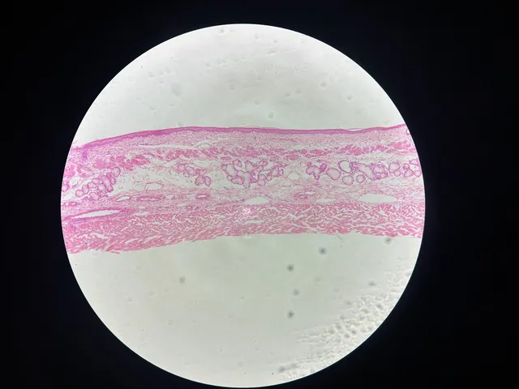

Pele e anexos
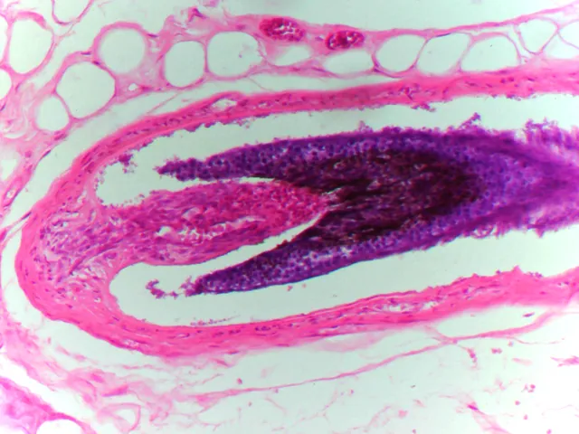
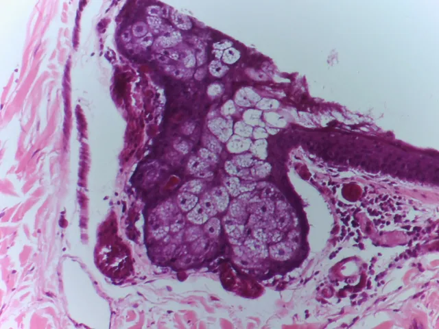
Tecido conjuntivo
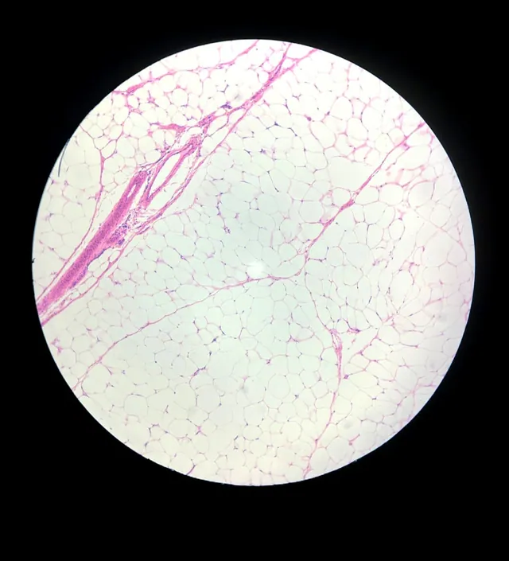


Cartilagem e osso

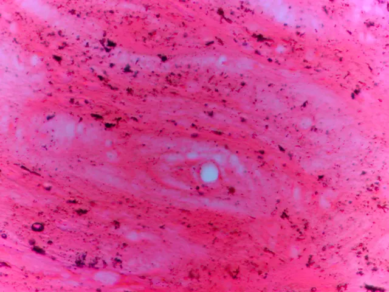

Sangue e órgãos linfoides
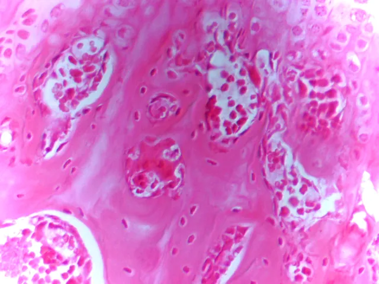


Tecido muscular
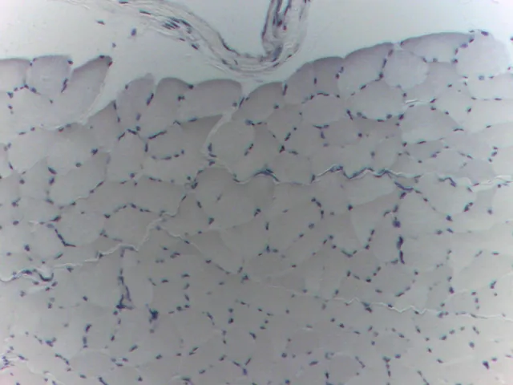
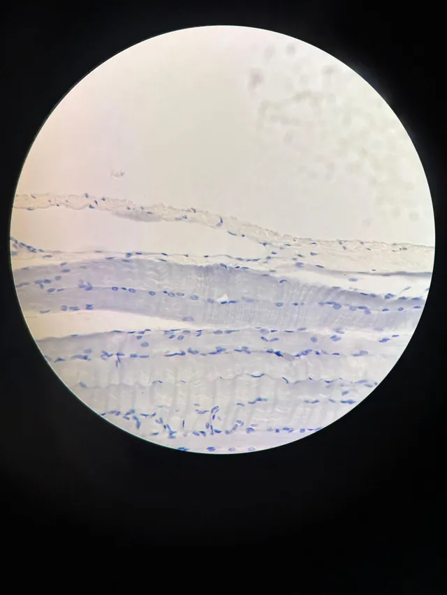

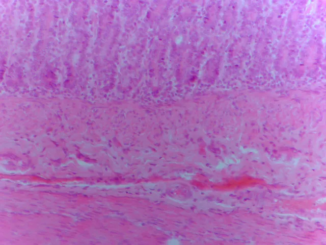
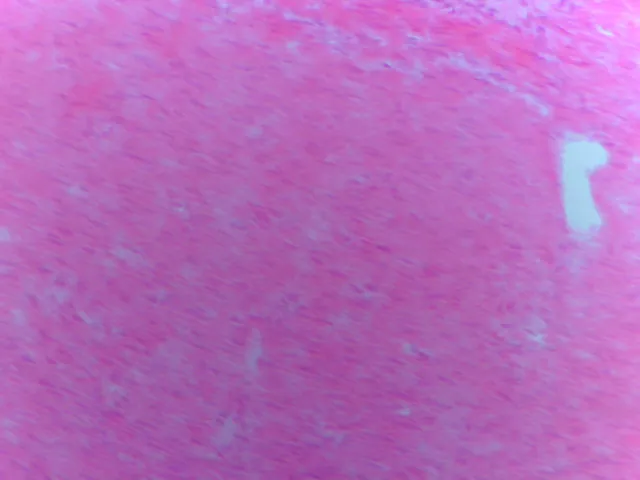


Tecido nervoso
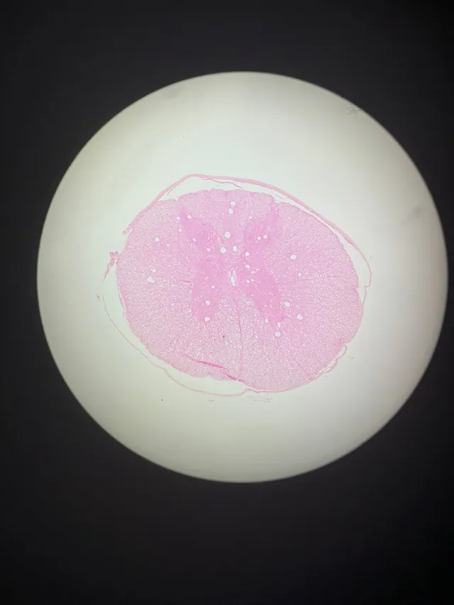
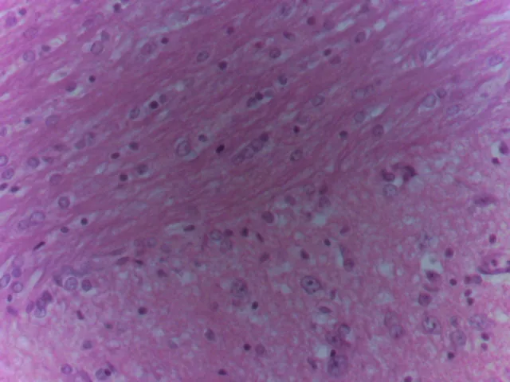

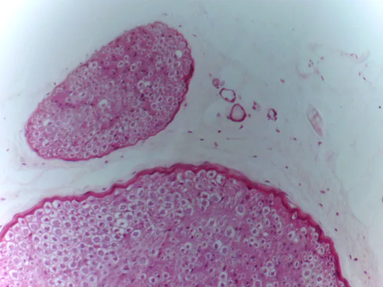


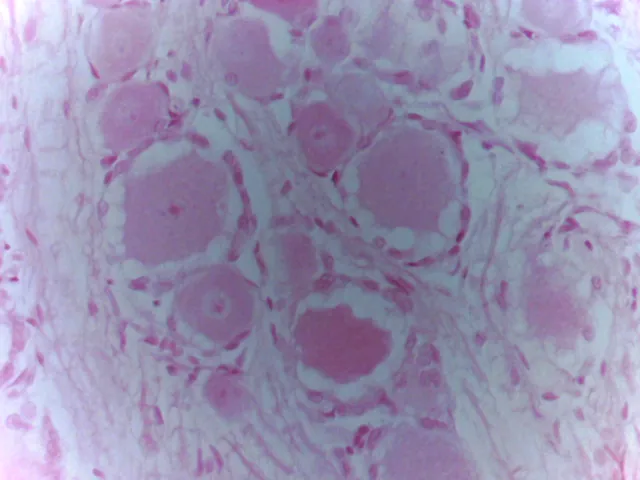
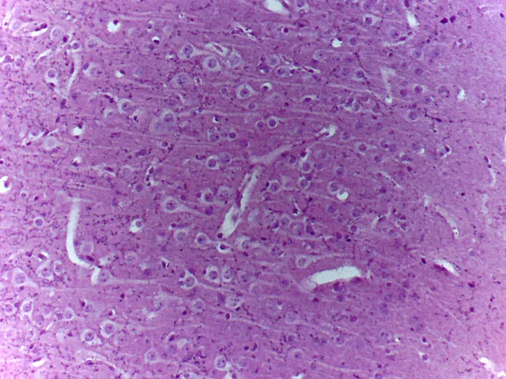
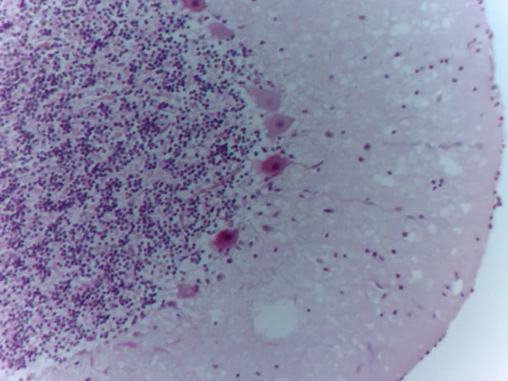
Sistema circulatório

Sistema digestório


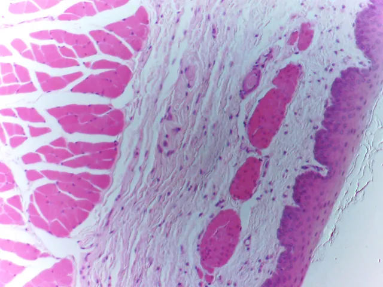

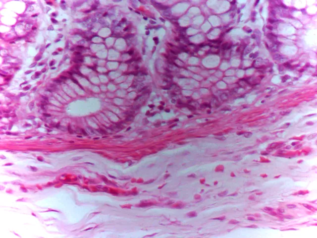
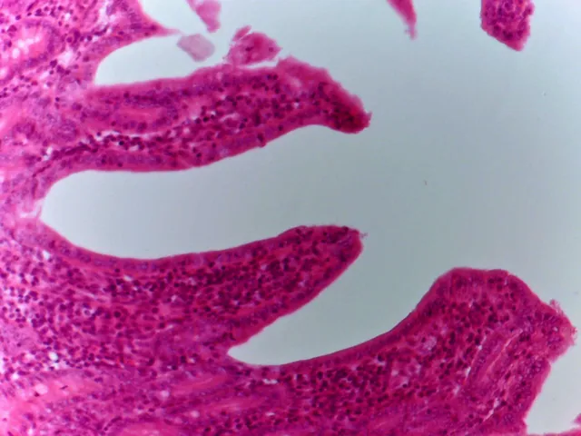

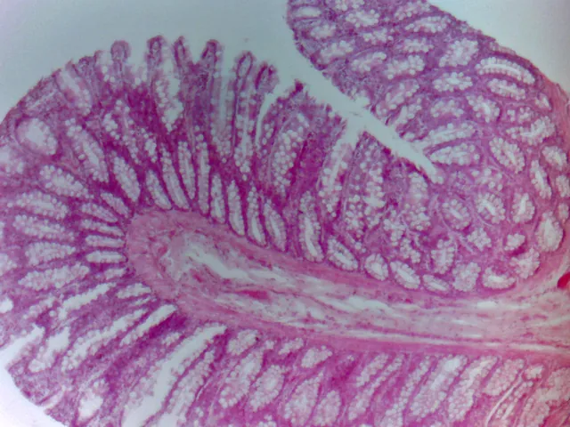


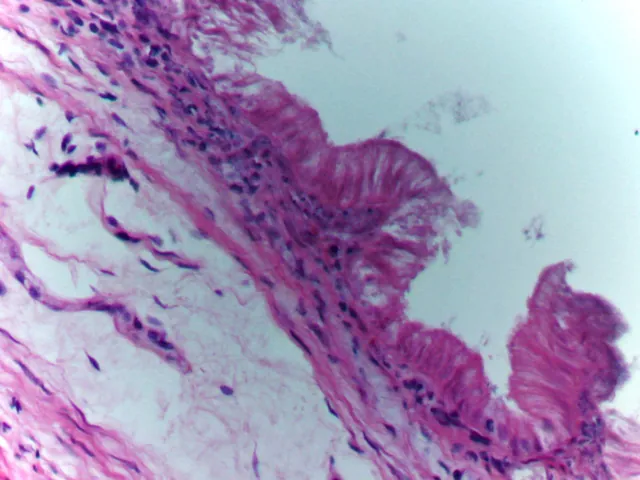
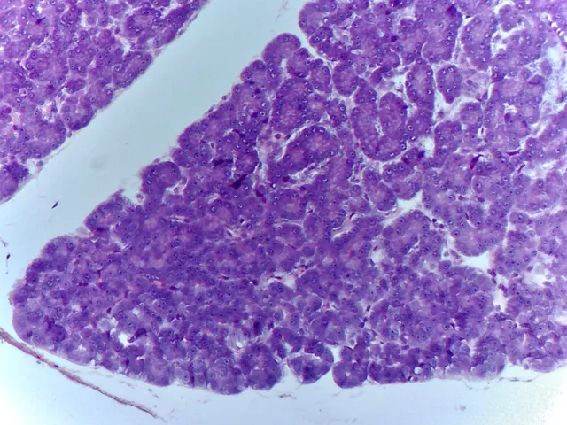
Sistema respiratório
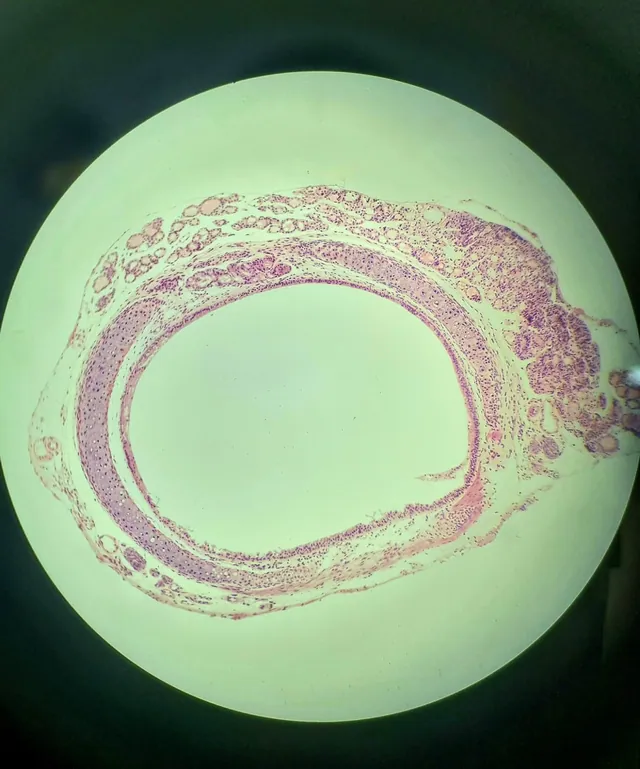
Sistema endócrino
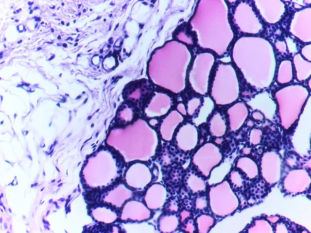
Sistema urinário

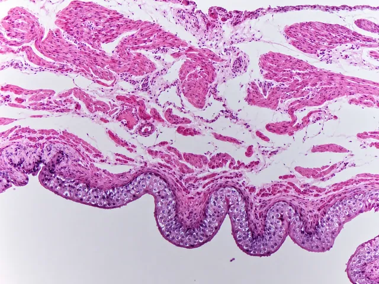
Sistema reprodutor


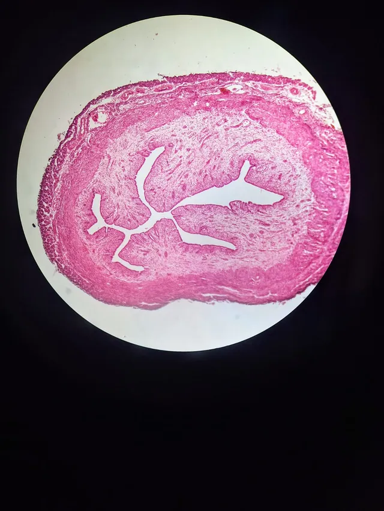
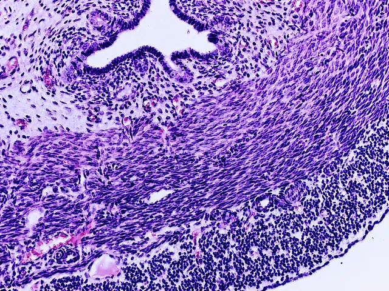


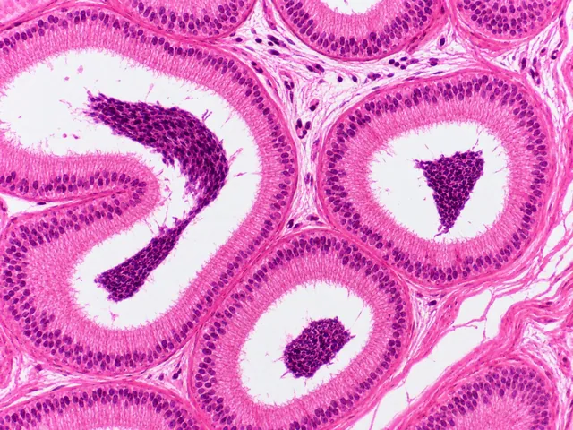
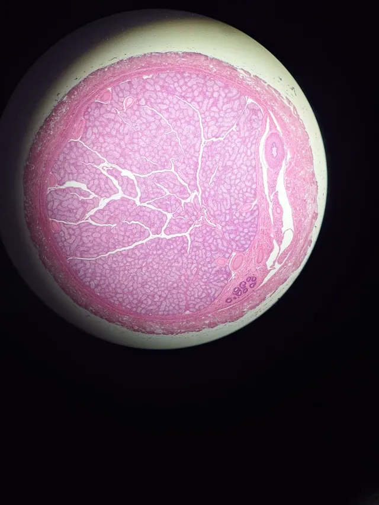

Nenhuma lâmina encontrada. Tente outro nome.